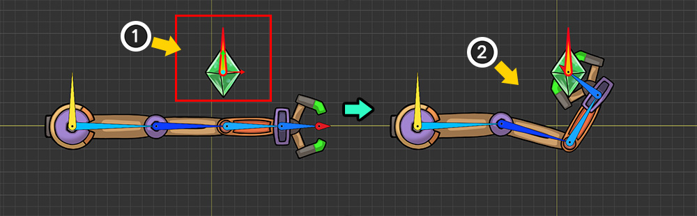
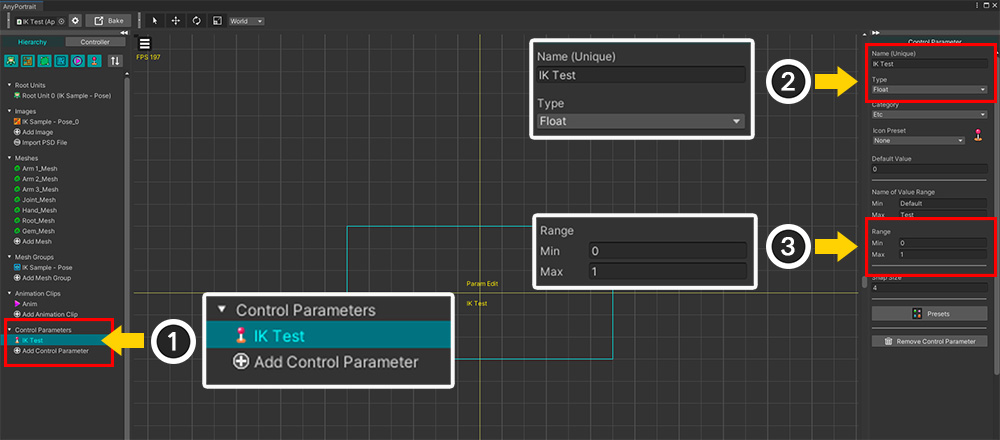
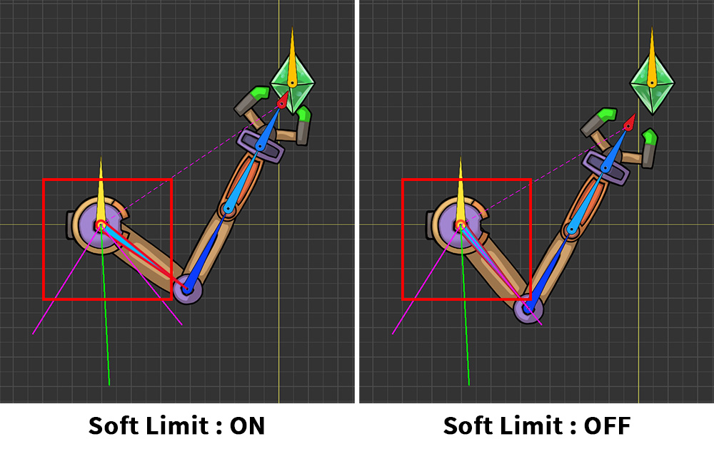
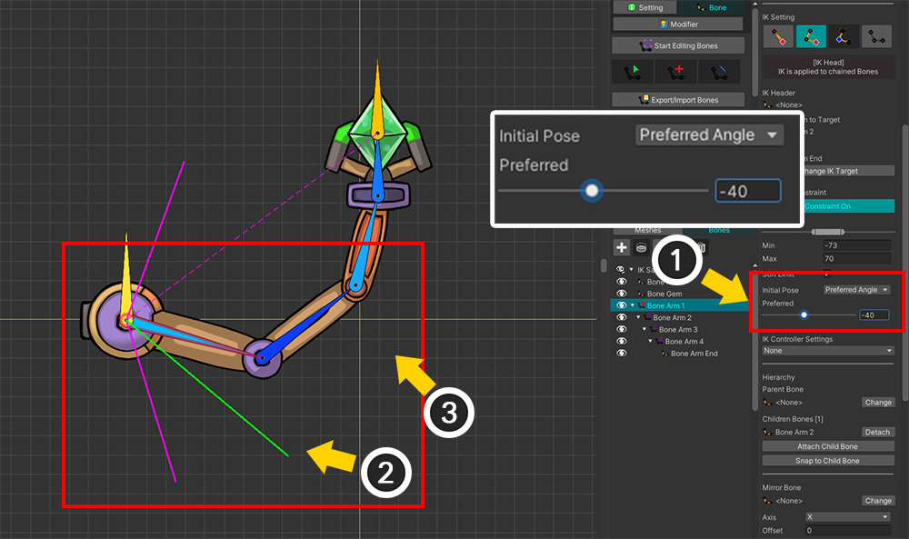

AnyPortrait > Manual > Making IK work as intended
Making IK work as intended
1.5.0
When an IK Chain moves with an IK Controller or something, there may be cases where the character takes a pose that does not match the user's intention.
IK has the disadvantage of being difficult to control bones that move automatically.
This page introduces several methods to induce IK to move according to the user's intention.

This is an example of a robot arm grabbing a gem. There is an IK Chain consisting of 5 bones including 1 End bone, and an IK Controller of type "Position" is set to target the gem ("Bone Gem").

(1) Move the gem ("Bone Gem") using the Transform modifier.
(2) You can see the robot arm moving to grab the gem by the IK Controller.
However, the results of IK are not what we expected.
The IK operation is successful, but we are not satisfied with the results.

IK technique does not have a clear answer by its nature.
The results of IK will vary depending on the algorithm, constraints, and properties.
You can see that the robot arm can take various poses for the same Effector Bone.
Since the user's intention is reflected in the IK calculation process, you can use this to make the bones take the intended pose.
You can check the following methods and use them appropriately.
Test using a Control Parameter
In order to change the properties of a bone and check the results of the IK Controller, you need to move the Effector Bone.
However, it is a cumbersome task to return to the animation editing screen every time.
In this case, you can easily test it by using the Control Parameter and the Transform (Controller) modifier.

(1) Create a Control Parameter for testing.
(2) We named it "IK Test" and set it to "Float" type.
(3) We set the range of the Control Parameter to "0~1". We will leave 0 as the default state and move the Effector Bone at 1.

(1) Select the mesh group, select the Modifier tab, and then press the "Add Modifier" button.
(2) Select the "Transform (Controller)" modifier to add.

(1) With the "Transform (Controller)" modifier selected, add modifier keys to the states where the values of the Control Parameter are 0 and 1, and change the value of the Control Parameter to 1.
(2) Turn on Edit Mode.
(3) Move the gem ("Bone Gem") that is the target of the IK Controller.

(1) Switch to the Bone tab in this state.
(2) Adjust the Control Parameter while "Editing Bones" is turned off.
(3) You can see how the IK Controller works as the Effector Bone gem moves.
Testing like this allows you to check the IK behavior right away and modify the bone.
Once testing is complete, delete the Control Parameter you created for testing.
Constraining the rotation angle

The first method is to constrain the rotation angle of bones.
This is essential to make it rotate only in a certain direction, like a human arm or leg.
(1) Select the Bone tab.
(2) Select the bone within the IK Chain whose properties you want to change.
(3) Click the "Constraint" button of the "IK Angle Constraint" item to activate the properties.

(1) UIs that can limit the rotation angle will appear. Adjust the Slider or "Min, Max" items. Let's also check the "Soft Limit" property.
(2) You can see the rotation range of the selected bone in the workspace.
(3) You can see the IK result changing as the bone's rotation angle is limited.
Note
To see the results of the IK Controller, "Bone Edit Mode" must be disabled.

The "Soft Limit" property determines how the rotation constraints are applied.
When "Soft Limit" is turned on, the movement will appear smooth even if it slightly exceeds the set range.
On the other hand, when "Soft Limit" is disabled, you will see that the angle constraints are strictly applied.
(This option only works when the IK method is FABRIK.)
Setting the Initial Pose

Setting the "Initial Pose" is also effective in controlling IK.
AnyPortrait's IK operation is performed through the above process.
First, bones are moved from the "Base Pose" to the "Initial Pose."
Then, the IK operation is performed based on the "Initial Pose."
Since the IK algorithm achieves the goal by moving the bones little by little, the results vary greatly depending on the "Initial Pose."
Setting the Initial Pose by the user is the most effective way to control IK.
The following is a description of the options for setting the Initial Pose.
Initial Pose Option 1. Preferred Angle
The first option to set the Initial Pose is "Preferred Angle".
When this option is selected, the "Initial Pose" is when the bone is rotated to the set angle.
This option causes IK calculations to always be performed from a constant pose, regardless of modifiers or animations.

(1) Select the bone.
(2) Activate "IK Angle Constraint".
(3) Set the value of Initial Pose to "Preferred Angle".
Note
Initial Pose is performed with the operation that constrains the rotation angle.
Therefore, the rotation angle constraint must be enabled.

(1) Adjust the Preferred slider.
(2) You can see the Preferred Angle through the green line in the workspace.
(3) The posture of the robot arm changes according to the Preferred Angle value.

You can see how the IK result changes depending on the Preferred Angle.
Initial Pose Option 2. Keep Current
The "Preferred Angle" method is intuitive and convenient, but it has the disadvantage of always being based on a fixed pose.
If the joint characteristics change depending on the animation, the "Initial Pose" should be able to be changed.
The "Keep Current (FK)" method considers the "Base Pose" right before the IK is calculated as the "Initial Pose."
In other words, you can set the "Initial Pose" of the bone manually in the modifier or animation.
(The option to use FK is only allowed in the FABRIK method.)
Note
FK stands for "Forward Kinematics", which is the opposite of "IK (Inverse Kinematics)". It refers to a technique of creating animation by rotating bones one by one in keyframe animation, and the basic working method of AnyPortrait is all FK.

(1) Select the bone.
(2) Set the value of Initial Pose to "Keep Current (FK)".

To utilize the "Keep Current (FK)" method, you have to move the bones of the IK Chain manually using modifiers or animations.
(1) Add or select an animation.
(2) Add or select the Transform (Animation) timeline.
(3) Select the bone in the IK chain.
(4) Register the bone to the timeline.

(1) Turn on the animation's edit mode.
(2) Add a keyframe with the bone selected.
(3) Rotate the bone to modifiy an "Initial Pose".

(1) Turn off animation editing mode.
(2) You can see that the result of the IK Controller has changed to match the "Initial Pose" set through the keyframe as shown above.

(1) To preview the IK result in the animation editing mode, activate "Preview Calculated Bones" ( Alt+B ) in the View menu.
(2) You can see the IK result displayed in the workspace as a yellow outline.
Initial Pose Option 3. Average
The last option is the "Average (Preferred+FK)" option, which uses the middle value between "Preferred Angle" and "Keep Current (FK)" as the "Initial Pose".
This option sets the Preferred Angle, and also creates animation for the bones in the IK Chain like regular bones, and applies it to the IK.

(1) Select the bone.
(2) Set the value of Initial Pose to "Average (Preferred+FK)".

Let's rotate the bone in the animation editing screen.
In the keyframe animation above, the bone is pointing to the upper right. (FK)
On the other hand, the set "Preferred Angle" is pointing to the lower right.

You can see that the result of the IK Controller is calculated based on the average of the two directions.
Setting up an IK controller on the middle bone
This method takes a completely different approach than the previous methods.
It uses the ability to assign IK Controllers to more than one IK Chain to control the results of the IK.
(Related Page)

(1) Add a new bone ("Bone Helper") on middle of the IK Chain.
Make the new bone move freely separately from the IK chain.

(1) Select a bone in the middle of the IK Chain.
(2) Set an IK Controller of type Position to the added bone ("Bone Helper"). Set the weight to a value greater than 0, but the influence on the entire IK Controller will be adjusted according to the weight value.

(1) Select the animation.
(2) Select the added bone ("Bone Helper") and register it on the timeline.
(3) Add a keyframe.
(4) Change the position of the "Bone Helper".

You can see the robot arm moving differently depending on the "Bone Helper".
Tip for controlling IK using FK
If you chose the option of "Initial Pose" using FK or if you use the Effector Bone in the middle, you will need to add keyframes to create the "Initial Pose".
At this time, you don't have to create many keyframes.

(1) Bones belonging to the IK Chain have keyframes created only in the first frame.
(2) Other objects including Effector Bone have keyframes created normally throughout the animation.
(3) Only the gem continues to move due to multiple keyframes.

When you play the animation, you can see that the robot arm moves appropriately to match the moving gem.
In this way, when creating keyframes to guide IK operations, you can work comfortably by creating only the minimum number of keyframes.